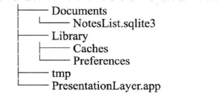
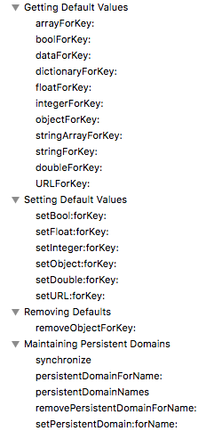

ios数据安全介绍
- ios应用程序只能访问自己的目录：即沙箱目录
- ios应用程序之间禁止数据的共享和访问。但是可以通过一些特定的api来访问特殊的应用（例：联系人，相册等）
沙箱目录
原理
- 只允许自己的应用访问目录，不允许其他的应用访问
目录
- 模拟器上应用的目录为
/Users/DayByDay/Library/Developer/CoreSimulator/Devices/FA6C2B57-08F0-4C3F-9DE7-DF662998F75D/data/Containers/Data/Application/08F5660E-5C75-4078-BB59-3182157C074C
- 其中：08F5660E-5C75-4078-BB59-3182157C074C为应用程序ID，在安装的时候由系统分配
- 解释了为什么模拟器上每次运行程序，其ID都不一样
沙箱内目录

Documents目录
- 用来存储频繁更新的数据，且可以进行itunes或者icloud备份
- 路径获取方式为
NSArray *documentPath = NSSearchPathForDirectoriesInDomains(NSDocumentDirectory, NSUserDomainMask, YES);
NSString *path = [documentPath firstObject];
- 由于在mac上，document可能对应多个文件夹，因此返回的类型为array类型
- 但是在ios上，一个应用只对于一个document，因此，取出一个即可
Library目录
- preferences：可用来存储程序的设置数据
- caches ：可用来存放程序的数据 和 缓存文件
tmp目录
- 临时文件，可能会被删除
NSString *tmpDir = NSTemporaryDirectory();
持久化存储方式
一. Archiving(固化)
1.1 保存数据
1.1.1 获取保存路径
- 得到沙盒中document的目录
- 拼接路径： stringByAppendingPathComponent
- 文件名： items.archive
#pragma mark - 获取文件路径
- (NSString *)itemArchivePath
{
/**
* NSSearchPathForDirectoriesInDomains得到沙盒中的某种目录的全路径
*
*/
NSArray *documentDirectories = NSSearchPathForDirectoriesInDomains(NSDocumentDirectory, NSUserDomainMask, YES);
/**
* 在ios中，一种目录类型只会有一个匹配的目录（应用沙盒的原因）；但是在MAX OS上可能有多个目录匹配
* 因此，NSSearchPathForDirectoriesInDomains返回的是NSArray，但ios只会取第一个也是唯一的一个NSString对象
*/
NSString *documentDirectory = [documentDirectories firstObject];
/**
* 返回路径；使用stringByAppendingPathComponent不需要添加“／／”
*/
return [documentDirectory stringByAppendingPathComponent:@"items.archive"];
}
1.1.2 保存数据
- 创建一个NSKeyedArchiver对象
- 发送encodeWithCoder：消息
- 编码到同一个NSKeyedArchiver对象中
- NSKeyedArchiver对象就会将数据写入指定的文件
- privateItems为一个数组，数组里面存储的是Item对象
#pragma mark - 应用退出时，保存数据
/**
* 应用退出时，保存数据
*/
- (BOOL)saveChanges
{
/**
* 获取需要保存的路径
*/
NSString *path = [self itemArchivePath];
NSLog(@"%@",path);
/**
* [NSKeyedArchiver archiveRootObject:self.privateItems toFile:path]执行流程：
* 1.archiveRootObject: toFile首先创建一个NSKeyedArchiver对象（NSKeyedArchiver是NSCoder的具体实现子类）
* 2.archiveRootObject: toFile会向privateItems发送encodeWithCoder：消息，并传入NSKeyedArchiver作为第一参数
* 3.privateItems的encodeWithCoder：方法会向其包含的所有BNRItem对象发送encodeWithCoder：消息，并传入同一个NSKeyedArchiver对象。
这些BNRItem对象会将其属性编码到同一个NSKeyedArchiver对象中
* 4.当privateItems中所有对象都编码完成，NSKeyedArchiver对象就会将数据写入指定的对象
*/
return [NSKeyedArchiver archiveRootObject:self.privateItems toFile:path];
}
1.1.3 Item 对象执行encodeWithCoder：方法
Item.m文件
#pragma mark - 固化delegate
-(void)encodeWithCoder:(NSCoder *)aCoder
{
[aCoder encodeObject:self.itemName forKey:@"itemName"];
[aCoder encodeObject:self.serialNumber forKey:@"serialNumber"];
[aCoder encodeObject:self.dateCreated forKey:@"dateCreated"];
[aCoder encodeInt:self.valueInDollars forKey:@"valueInDollars"];
}
1.1.4 写入完成
2.1 读取数据
NSString *path = [self itemArchivePath];
_privateItems = [NSKeyedUnarchiver unarchiveObjectWithFile:path];
- unarchiveObjectWithFile:方法会创建一个NSKeyedUnarchiver对象，并载入固化文件
- 该NSKeyedUnarchiver对象查看固化文件中根对象，并创建之
- NSKeyedUnarchiver对象向新创见的对象发送initWithCorder:消息，并将 NSKeyedUnarchiver作为实参传入
- 向所有解固的对象发initWithCorder:消息
2.2 接收initWithCorder:消息
Item.m文件
- (instancetype)initWithCoder:(NSCoder *)aDecoder
{
self = [super init];
if(self)
{
_itemName = [aDecoder decodeObjectForKey:@"itemName"];
_serialNumber = [aDecoder decodeObjectForKey:@"serialNumber"];
_dateCreated = [aDecoder decodeObjectForKey:@"dateCreated"];
_valueInDollars = [aDecoder decodeIntForKey:@"valueInDollars"];
}
return self;
}
一. NSUserDefaults
介绍
- 用户轻量级的数据持久化，主要用于保存用户程序的配置等信息，以便下次启动程序后能恢复上次的设置。
- 以“键值对”形式保存的(类似于NSDictionary)
保存位置
/Library/Prefereces，里面有个plist文件，存储的就是你的userDefaults.
删除
removeObjectForKey或者删掉沙盒
存储
NSUserDefaults * defaults = [NSUserDefaults standardUserDefaults];
NSString * adate = @"success!";
[defaults setObject:adate forKey:@"adate"];
[defaults synchronize]; //同步到磁盘
取出
NSUserDefaults * _defaults = [NSUserDefaults standardUserDefaults];
NSString * _adate = [_defaults objectForKey:@"adate"];
